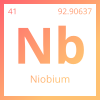
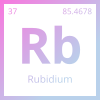
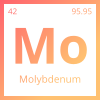
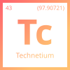
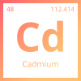
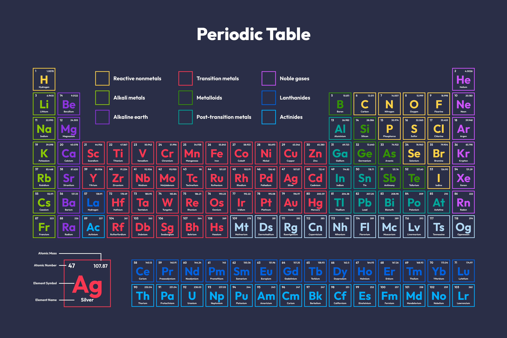

The multiple-choice question is:
“Which of the following metals has the lowest melting point?”
Options:
To answer this, let’s look at each element in detail.
Slot kept plenty of firepower and leadership ready to step in:

Niobium is a refractory metal, meaning it has an exceptionally high melting point of about 2,477 °C. This property makes it valuable in superalloys for jet engines and rockets. Its strength at high temperatures eliminates it from being the lowest melting point in this list.

Ruthenium is a rare transition metal with a melting point of 2,334 °C. It is often used in electronics, catalysts, and wear-resistant coatings. Its high heat tolerance means it is also not a candidate for the lowest melting point among the options.

Molybdenum is another refractory metal, melting at an impressive 2,623 °C. Because of its strength and stability at high temperatures, it is widely used in industrial furnaces, steel alloys, and aerospace components. Clearly, this rules it out as the lowest-melting metal here.

Technetium has a melting point of about 2,157 °C. While lower than Nb, Ru, and Mo, it is still far too high compared to a soft, low-melting metal. Since technetium is also radioactive, its applications are limited mainly to medical imaging rather than heat-based industries.

Cadmium is the clear outlier. Its melting point is only 321 °C, which is extremely low compared to the thousands of degrees required to melt the other metals listed. Because of this, cadmium is soft and easily deformed, which makes it useful in low-melting alloys, coatings, and batteries but unsuitable for high-temperature environments.
Among the metals listed, Cadmium (Cd) has the lowest melting point. Its softness and low heat tolerance set it apart from the other transition and refractory metals.
This comparison demonstrates the wide range of melting points among metals. While elements like Niobium, Ruthenium, Molybdenum, and Technetium excel in high-temperature stability, Cadmium sits on the opposite end of the spectrum, making it the correct answer to the question.
